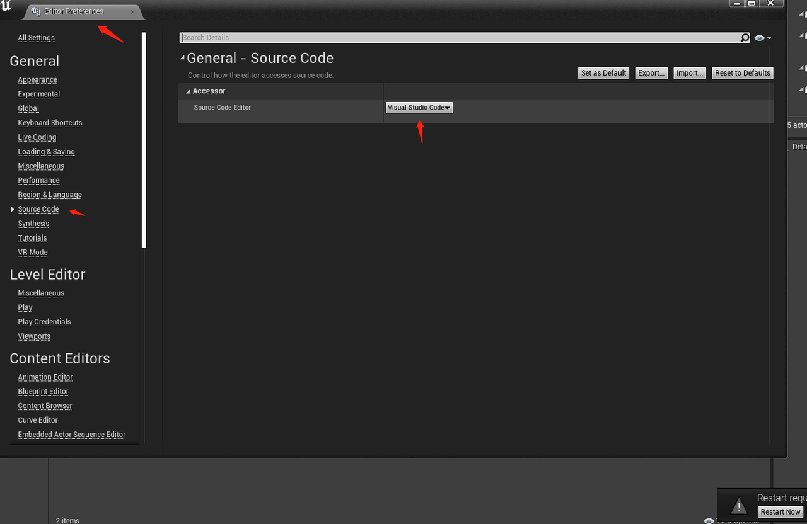

UE4.27配置Windows VS2019 & VScode#
前文说明：#
网上资料说对Unreal Engine支持最好的IDE是JetBrains Rider(确实是最好的)，在这里暂不讨论，有兴趣可自行网上查询怎么配置和使用 目前该本文只讨论Windows环境UE4.27配置VS2019 & VScode
1. UE4.27配置VS2019#
Unreal官方配置vs的文档说明，有需要可自行查阅 设置虚幻引擎的Visual Studio
1.1 下载和安装VS2019#
官方要求UE4.25版本以上需要配置VS2019
官方下载地址，需要自行注册账号，才可以下载Visual Studio安装器，VS有三个版本可以下载，自行根据自身需求下载即可；下载完成之后，按默认安装即可
VS2019所需安装的组件，UE说明文档有截图，但测试发现还少了一些组件，建议按一下推荐的组件勾选，因为缺少某些组件安装会导致后续UnrealVS扩展的安装失败 安装默认路径安装即可，系统环境变量Path应该会自动添加上安装的MSVC路径的，如果没有可以自行添加
红框为必须的组件
安装完成如下图，如果存在多个VS版本，要注意系统环境变量，尽可能只设置一个VS版本的路径

可自行新建一个vs的项目，测试VS2019是否正常使用
1.2 安装UnrealVS扩展#
UnrealVS扩展为VS提供智能提示等多个功能，详细可以参考官方安装说明
在Unreal的安装路径下Extras文件夹可以找到该扩展，下面为默认的扩展路径，安装按默认安装即可，安装的具体细节可以参考官方说明
UnrealVS扩展出现安装失败的情况，应该是某些VS2019的组件安装缺少或VS版本过低，注意如果还是安装失败要使用winrar把UnrealVS解压，在解压文件夹下找到extension.visxmanifest文件，打开可以看到需要安装的vs版本和.NET版本，如果安装的VS版本和.NET版本低于需要的版本，那么就要升级VS和.NET版本
正常安装之后在vs的扩展可以查看到
1.3 测试UE项目#
创建新Unreal的C++项目，其他按默认空白项目创建，把蓝图项目改为C++项目即可
打开UE后，在插件管理器，把这三个插件勾选，重启UE
UE构建VS2019项目，在Edit -> Editor Preferences -> Source Code 修改为Visual Studio2019；然后重启UE，在File -> Generate Visual Studio 2019 Project，点击生成VS2019的项目配置文件，生成完成后，可以直接在File -> Open Visual Studio 2019打开VS2019，Refresh Visual Studio 2019 Project就是刷新vs的配置文件

在VS点击构建UE项目或者Unreal点击编译的时候，会出现构建失败，这个是UE生成的配置文件出现的BUG，可以按下面方法修复
找到Source文件夹下项目文件夹的 .Build.cs文件，按一下说明修改保存即可，再点击VS的构建项目或者在Unreal点击编译也不会失败了
//修改改代码，添加 "Blutility"
PublicDependencyModuleNames.AddRange(new string[] { "Core", "CoreUObject", "Engine", "InputCore", "Blutility" });
//新增代码
PublicIncludePaths.AddRange(new string[] { System.IO.Path.GetFullPath(Target.RelativeEnginePath) + "Source/Editor/Blutility/Private" });
新建UE的类测试，新建的类继续AssetActionUtility父类，注意在vs编写好的c++文件要重新vs构建或UE重编译，UE才能正常读取到修改好的类文件
在VS中头文件正常，UE的类型和智能提示也是正常，就说明配置成功了，值得注意是VS的智能提示速度有点慢，网上有配置VAssistX插件来解决该问题，可参考测试 UE4 C++ 开发 VisualStudio终极设置
2. UE4.27配置VSCode#
安装vscode之前也是需要先安装好vs2019和所需的组件（可参考上文），并且需要安装Python3.7.7，需要配合python来修复一些.vscode配置文件的bug，安装python3.7.7版本是因为UE4.27支持该版本，并且也方便配置VSCode配置ue的python 官方说明
下载地址
2.1 下载和安装VSCode#
去官网下载并按默认安装即可
vscode配置下载所需的插件，红框就是所需的vscode插件
2.2 测试UE项目#
创建项目和配置ue插件步骤，可参考前面Windows环境下UE4.27配置VS2019 & VScode 设置Source Code Editor为Visual Studio Code，然后重启UE，在File -> Generate Visual Studio Code Project (因为项目之前已经生成过VSCode，所以没有该命令），点击生成VSCode的配置文件，生成完成后，可以直接在File -> Open Visual Studio Code打开VSCode，Refresh Visual Studio Code Project就是刷新vscode的配置文件 
在Unreal点击编译或创建C++类，会出现构建失败，可以按上文VS构建UE项目失败的方法修复
在VSCode的Run 和Debug，使用以下红框的可以debug UE项目，Generate Project Files是生成VSCode配置文件，一般不使用多次生成，暂没找到在VSCode构建UE项目，当在VSCode编写完成代码之后，在UE点击编译来重新构建项目
2.3 修复.vscode配置文件的bug#
出现.vscode配置文件的bug的问题，详情可看官方论坛
Has anyone ever got VSCode working with UE4? (including intellisense)
The way to fix unreal 4.27 vscode intelligence bug
修复bug的VSCode扩展，可自行按说明配置测试
根据以上方案，直接在项目新建py脚本来修复，在UE项目下新建Fix_UnrealToVSCode_Bug.py脚本文件，代码如下：
import json
import re
from typing import List
def fix_cmd(filepath):
with open(filepath) as fp:
d = json.load(fp)
for item in d:
cmd = item['command']
m: List[re.Match] = re.findall("(C:.*cl.exe) (@.*)", cmd)
m0 = m[0]
cmd = f"\"{m0[0]}\" {m0[1]}"
item['command'] = cmd
with open(filepath, 'w') as fp:
json.dump(d, fp, indent='\t')
if __name__ == "__main__":
import os
project_path = os.path.dirname(__file__)
project_name = project_path.split("/")[-1]
print(project_path, project_name)
fix_cmd("%s/.vscode/compileCommands_Default.json" % (project_path))
fix_cmd("%s/.vscode/compileCommands_%s.json" %
(project_path, project_name))
代码指定之前安装的python3.7.7来执行即可
修复正常之后如下，值得注意的是在UE或者VSCode重新生成.vscode配置，那么又要再执行py脚本修复一下，建议就是生成之后就不要多次重新生成配置文件
2.4 VSCode配置Unreal的python#
先在UE插件开启Python，然后再项目开启Developer Mode (all users)，然后重启ue
在UE项目的文件夹下Intermediate下PythonStub有unreal.py文件，后续的python脚本可以直接在这个文件夹创建
UE使用python详细的官方文档